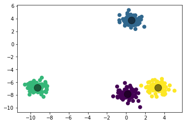

In [11]:
%matplotlib inline
import matplotlib.pyplot as plt
import seaborn as sns
import numpy as np
from sklearn.cluster import KMeans
Introduction to Classification¶
In [12]:
from sklearn.datasets.samples_generator import make_blobs
X, y_true = make_blobs(n_samples=300, centers=4,
cluster_std=0.60)
plt.scatter(X[:, 0], X[:, 1], s=50);
In [13]:
kmeans = KMeans(n_clusters=4)
kmeans.fit(X)
y_kmeans = kmeans.predict(X)
In [14]:
plt.scatter(X[:, 0], X[:, 1], c=y_kmeans, s=50, cmap='viridis')
centers = kmeans.cluster_centers_
plt.scatter(centers[:, 0], centers[:, 1], c='black', s=200, alpha=0.5);

In [15]:
kmeans = KMeans(n_clusters=3)
kmeans.fit(X)
y_kmeans = kmeans.predict(X)
In [16]:
plt.scatter(X[:, 0], X[:, 1], c=y_kmeans, s=50, cmap='viridis')
centers = kmeans.cluster_centers_
plt.scatter(centers[:, 0], centers[:, 1], c='black', s=200, alpha=0.5);
Examples¶
- Iris: Classify flower species based on measurements
- Handwritten Digits: Is the digit a 0, 1, 2, 3, … ?
In [17]:
from sklearn.datasets import load_iris
iris = load_iris()
In [18]:
iris.DESCR
Out[18]:
'Iris Plants Database\n====================\n\nNotes\n-----\nData Set Characteristics:\n :Number of Instances: 150 (50 in each of three classes)\n :Number of Attributes: 4 numeric, predictive attributes and the class\n :Attribute Information:\n - sepal length in cm\n - sepal width in cm\n - petal length in cm\n - petal width in cm\n - class:\n - Iris-Setosa\n - Iris-Versicolour\n - Iris-Virginica\n :Summary Statistics:\n\n ============== ==== ==== ======= ===== ====================\n Min Max Mean SD Class Correlation\n ============== ==== ==== ======= ===== ====================\n sepal length: 4.3 7.9 5.84 0.83 0.7826\n sepal width: 2.0 4.4 3.05 0.43 -0.4194\n petal length: 1.0 6.9 3.76 1.76 0.9490 (high!)\n petal width: 0.1 2.5 1.20 0.76 0.9565 (high!)\n ============== ==== ==== ======= ===== ====================\n\n :Missing Attribute Values: None\n :Class Distribution: 33.3% for each of 3 classes.\n :Creator: R.A. Fisher\n :Donor: Michael Marshall (MARSHALL%PLU@io.arc.nasa.gov)\n :Date: July, 1988\n\nThis is a copy of UCI ML iris datasets.\nhttp://archive.ics.uci.edu/ml/datasets/Iris\n\nThe famous Iris database, first used by Sir R.A Fisher\n\nThis is perhaps the best known database to be found in the\npattern recognition literature. Fisher\'s paper is a classic in the field and\nis referenced frequently to this day. (See Duda & Hart, for example.) The\ndata set contains 3 classes of 50 instances each, where each class refers to a\ntype of iris plant. One class is linearly separable from the other 2; the\nlatter are NOT linearly separable from each other.\n\nReferences\n----------\n - Fisher,R.A. "The use of multiple measurements in taxonomic problems"\n Annual Eugenics, 7, Part II, 179-188 (1936); also in "Contributions to\n Mathematical Statistics" (John Wiley, NY, 1950).\n - Duda,R.O., & Hart,P.E. (1973) Pattern Classification and Scene Analysis.\n (Q327.D83) John Wiley & Sons. ISBN 0-471-22361-1. See page 218.\n - Dasarathy, B.V. (1980) "Nosing Around the Neighborhood: A New System\n Structure and Classification Rule for Recognition in Partially Exposed\n Environments". IEEE Transactions on Pattern Analysis and Machine\n Intelligence, Vol. PAMI-2, No. 1, 67-71.\n - Gates, G.W. (1972) "The Reduced Nearest Neighbor Rule". IEEE Transactions\n on Information Theory, May 1972, 431-433.\n - See also: 1988 MLC Proceedings, 54-64. Cheeseman et al"s AUTOCLASS II\n conceptual clustering system finds 3 classes in the data.\n - Many, many more ...\n'
In [19]:
import pandas as pd
X = pd.DataFrame(iris.data, columns = iris.feature_names)
y = iris.target
In [20]:
X.head()
Out[20]:
| sepal length (cm) | sepal width (cm) | petal length (cm) | petal width (cm) | |
|---|---|---|---|---|
| 0 | 5.1 | 3.5 | 1.4 | 0.2 |
| 1 | 4.9 | 3.0 | 1.4 | 0.2 |
| 2 | 4.7 | 3.2 | 1.3 | 0.2 |
| 3 | 4.6 | 3.1 | 1.5 | 0.2 |
| 4 | 5.0 | 3.6 | 1.4 | 0.2 |
In [97]:
y[:15], y[70:90]
Out[97]:
(array([0, 0, 0, 0, 0, 0, 0, 0, 0, 0, 0, 0, 0, 0, 0]),
array([1, 1, 1, 1, 1, 1, 1, 1, 1, 1, 1, 1, 1, 1, 1, 1, 1, 1, 1, 1]))
In [21]:
kmeans = KMeans(n_clusters=3)
kmeans.fit(X)
y_kmeans = kmeans.predict(X)
In [22]:
plt.scatter(X['sepal length (cm)'], X['petal length (cm)'], c = y, alpha = 0.2)
plt.scatter(X['sepal length (cm)'], X['petal length (cm)'], c = y_kmeans, alpha = 0.1)
Out[22]:
<matplotlib.collections.PathCollection at 0x10a014dd8>
Digit Recognition¶
In [23]:
from sklearn.datasets import load_digits
digits = load_digits()
digits.data.shape
Out[23]:
(1797, 64)
In [24]:
a = digits.data[0].reshape(8, 8)
In [26]:
a
Out[26]:
array([[ 0., 0., 5., 13., 9., 1., 0., 0.],
[ 0., 0., 13., 15., 10., 15., 5., 0.],
[ 0., 3., 15., 2., 0., 11., 8., 0.],
[ 0., 4., 12., 0., 0., 8., 8., 0.],
[ 0., 5., 8., 0., 0., 9., 8., 0.],
[ 0., 4., 11., 0., 1., 12., 7., 0.],
[ 0., 2., 14., 5., 10., 12., 0., 0.],
[ 0., 0., 6., 13., 10., 0., 0., 0.]])
In [27]:
plt.imshow(a)
Out[27]:
<matplotlib.image.AxesImage at 0x10a358d68>
In [28]:
kmeans = KMeans(n_clusters=10, random_state=0)
clusters = kmeans.fit_predict(digits.data)
kmeans.cluster_centers_.shape
Out[28]:
(10, 64)
In [111]:
fig, ax = plt.subplots(2, 5, figsize=(8, 3))
centers = kmeans.cluster_centers_.reshape(10, 8, 8)
for axi, center in zip(ax.flat, centers):
axi.set(xticks=[], yticks=[])
axi.imshow(center, interpolation='nearest')
Problem¶
Use kmeans to cluster the following song data. Discuss the meaning of the clusters.
In [29]:
import pandas as pd
songs = pd.read_csv('data/songs.csv')
In [30]:
songs.head()
Out[30]:
| name | party rhymes | folk influences | indian influences | use of ambient synths | sexist lyrics | catchy hooks | Puerto Rican roots | a knack for catchy hooks | subtle use of white noise | ... | smooth synth textures | use of techno synths | ska influences | prominent drums | cash obsessed lyrics | surreal lyrics | rhythmic clapping | jazz influences | arpeggiated synths | varying tempo and time signatures | |
|---|---|---|---|---|---|---|---|---|---|---|---|---|---|---|---|---|---|---|---|---|---|
| 0 | /andybody/1st-bass-is-deepest-single/1st-bass-... | False | False | False | False | False | False | False | False | False | ... | False | False | False | False | False | False | True | False | False | False |
| 1 | /angels-airwaves/everythings-magic/everythings... | False | False | False | False | False | False | False | False | False | ... | False | False | False | False | False | False | False | False | False | False |
| 2 | /angels-airwaves/i-empire/call-to-arms | False | False | False | False | False | False | False | False | False | ... | False | False | False | False | False | False | False | False | False | False |
| 3 | /angels-airwaves/i-empire/secret-crowds | False | False | False | False | False | False | False | False | False | ... | False | False | False | False | False | False | False | False | False | False |
| 4 | /angels-airwaves/warped-tour-2008-compilation/... | False | False | False | False | False | False | False | False | False | ... | False | False | False | False | False | False | False | False | False | False |
5 rows × 314 columns
In [31]:
songs.info()
<class 'pandas.core.frame.DataFrame'>
RangeIndex: 235 entries, 0 to 234
Columns: 314 entries, name to varying tempo and time signatures
dtypes: bool(313), object(1)
memory usage: 73.7+ KB
In [ ]:
sg = KMeans()
sg.fit()
KMeans and Regression¶
We can use the KMeans approach to consider our earlier problem involving
finding the line of best fit for the mtcars dataset. Now, we want to
assign \(y\)-values based on the nearest \(k\) neighbors.
Plotting the result of two iterations with different values for
\(k\) surfaces important considerations.
In [32]:
mtcars = pd.read_csv('data/mtcars.csv')
In [33]:
plt.scatter(mtcars['hp'], mtcars['mpg'])
Out[33]:
<matplotlib.collections.PathCollection at 0x10a3eae10>
In [34]:
from sklearn.neighbors import KNeighborsRegressor
In [35]:
regress = KNeighborsRegressor()
X = mtcars['hp'].values.reshape(-1,1)
y = mtcars['mpg']
regress2 = KNeighborsRegressor(n_neighbors=20)
In [36]:
regress.fit(X, y)
regress2.fit(X, y)
Out[36]:
KNeighborsRegressor(algorithm='auto', leaf_size=30, metric='minkowski',
metric_params=None, n_jobs=1, n_neighbors=20, p=2,
weights='uniform')
In [37]:
x = mtcars.sort_values('hp')
y2 = regress.predict(x['hp'].values.reshape(-1,1))
y3 = regress2.predict(x['hp'].values.reshape(-1,1))
In [38]:
plt.figure(figsize = (9, 6))
plt.scatter(mtcars['hp'], mtcars['mpg']);
plt.plot(x['hp'], y2, '--o', color = 'orange', label = '5 Neighbors');
plt.plot(x['hp'], y3, '--o', color = 'green', label = '20 Neighbors');
plt.legend(frameon = False)
Out[38]:
<matplotlib.legend.Legend at 0x101c9b9e8>